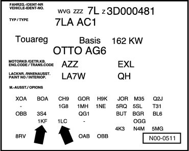
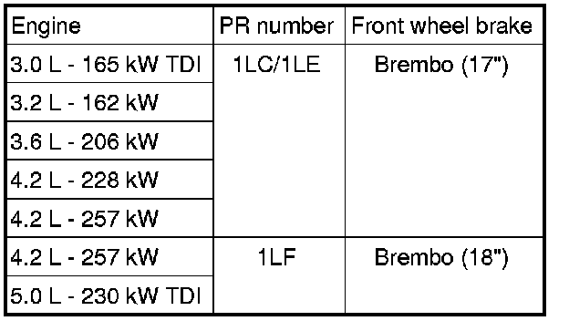
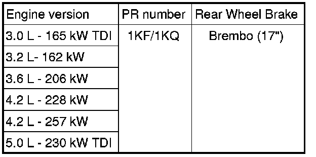

Antilock Brakes / Traction Control Systems: Application and ID
Brake PR Number, Allocating
The PR number on the vehicle data label describes which brake system is installed in the vehicle.
Sample Vehicle Data Label

In this example, the following brake system is installed in the vehicle:
• Arrow 1 - Rear brakes - 1KF
• Arrow 2 - Front brakes - 1LC
The vehicle data label can be found in the spare wheel well as well as in the maintenance booklet.
The following table shows the meaning of the PR numbers. These are important for combination brake caliper/brake disc and brake pad.
• Allocation.
Front Brakes

Rear Disc Brakes
